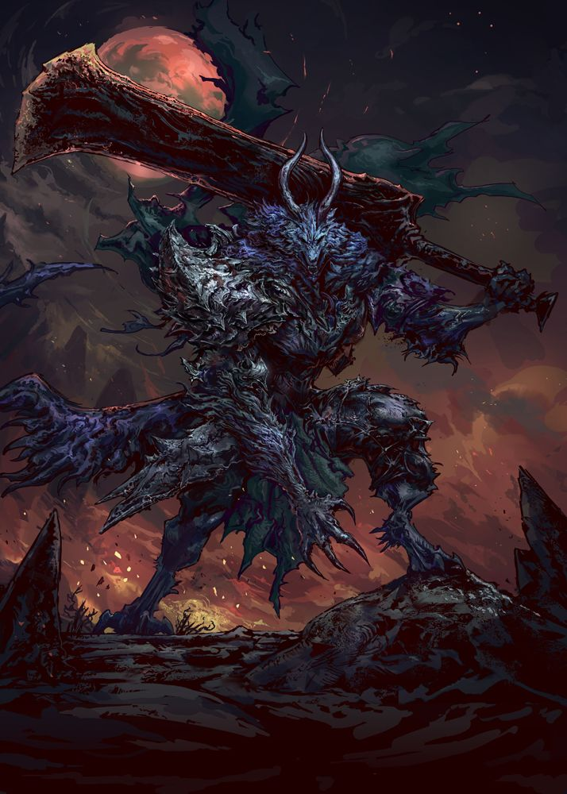

Lycanthrope
Stats:
HP: 900
MP: 0
PHY STR: 25
PHY DEF: 20
MG STR: 0
MG DEF: 8

Lycanthrope Skills:
- Feral Bite (Offensive) (Level 0): The Lycanthrope lunges forward, sinking its fangs into a single target, dealing 180 DMG and having a 30% chance to apply a Low-Tier Bleeding
status effect for 3 turns.
- Pack Pounce (Offensive) (Level 5): The Lycanthrope and its packmates coordinate a simultaneous pounce on a single target, dealing 350 DMG each. If the attack hits, the user will gain a 15% PHY ATK boost for 3 turns (Can only be used twice per battle).
- Savage Claws (Offensive) (Level 15): The Lycanthrope unleashes a flurry of devastating claw strikes, dealing 250 DMG to a single target and having a 45% chance to apply a Low-Tier Stunned
status effect (Can only be used twice per battle).
- Beastial Leap (Offensive) (Level 25): The Lycanthrope leaps at a single target from a distance, dealing 600 DMG.
- Rabid Rage (Support) (Level 35): The Lycanthrope enters a state of infectious, rabid rage, increasing its PHY ATK by 50% and its PHY DEF by 30% for 3 turns. (Can only be used once per battle).
- Alpha's Vengeance (Offensive) (Level 45): The Lycanthrope unleashes a devastating howl, dealing 600 DMG to all enemies and having a 70% chance to apply the Cursed
status effect for 3 turns.
- Primal Predator (Support) (Level 65): The Lycanthrope channels its inner wolf, increasing its PHY ATK by 60% and its PHY DEF by 40% for 2 turns. While active, the Lycanthrope's skills have a 30% chance to deal an additional 300 DMG (Can only be used once per battle).
- Pack Hunt (Support) (Level 70): The Lycanthrope marks a target with a scent trail, causing it to take a 50% damage increase from all Lycanthrope attacks for 5 turns. The target also has a 60% chance to suffer the Misfortune status effect each turn (Can only be used three times per battle).
- Lunar Fury (Support) (Level 85): Causes the user to gain a 50% boost to PHY ATK and a 30% boost to PHY DEF for 5 turns. Enemies hit by a Lycanthrope's attack during this time take 200 DMG per turn and have a 25% chance to suffer a High-Tier Stunned status effect for 2 turns. (Can only be used once per battle).
- Alpha's Wrath Unleashed (Offensive) (Level 100): The Lycanthrope unleashes the full might of its alpha power, dealing 1700 DMG to all enemies and applying a random High-Tier negative status effect for 5 turns. Enemies afflicted by the effect take a 40% damage increase from all sources. (Can only be used once per battle)